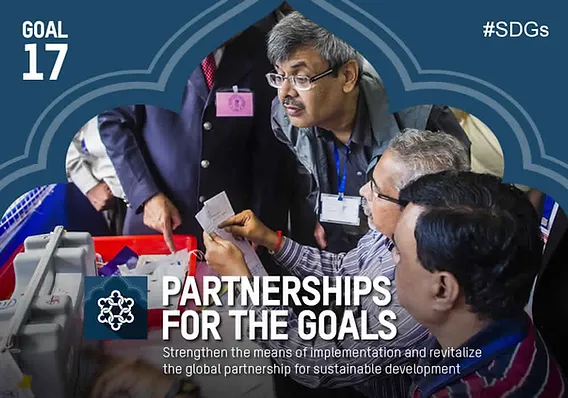

SDG 17 focuses on revitalizing global partnerships for sustainable development, emphasizing the need for collaboration between governments, the private sector, and civil society to achieve the 2030 Agenda. This goal highlights the challenges faced by low and middle-income countries, particularly rising debt levels exacerbated by the COVID-19 pandemic, inflation, and fiscal constraints. Despite increased official development assistance (ODA), much of it has been directed to refugees and crisis response, underscoring the need for more targeted financial support and debt relief. Success depends on mobilizing both existing and new resources, with developed countries fulfilling their ODA commitments. Strengthening multilateralism, building multistakeholder partnerships, and ensuring regular reviews of progress are critical to overcoming challenges and ensuring no one is left behind in global development.